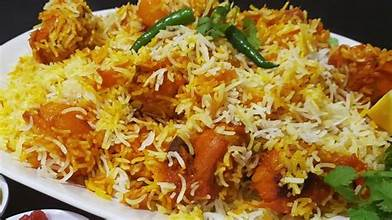
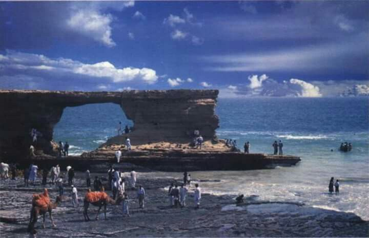

Some of the things you would cost if missed

Allah Wallah Biryani
This is the Famous ALLAH Wala Biryani of Karachi which is on of the best Biryani of entire Pakistan. This ALLAH Wala Biryani is very old and so famous that many YouTubers.

Hawke's Bay
Hawke's Bay or Hawkesbay is a beach in Karachi, Sindh, Pakistan, located 20 km southwest of Karachi city. The beach is named after Bladen Wilmer Hawke, who owned a house on the beach during the 1930s..

Atrium Mall and Cinema
Atrium Mall and Cinemas is situated in the heart of Saddar, a town central part of Karachi.. The complex houses 3D cinemas, a food court and more than 100 retail outlets!